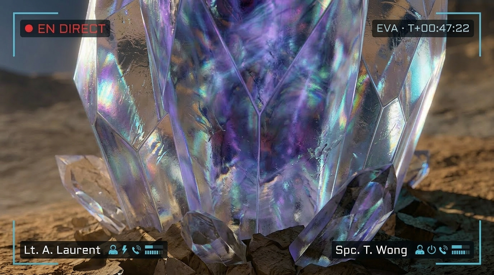
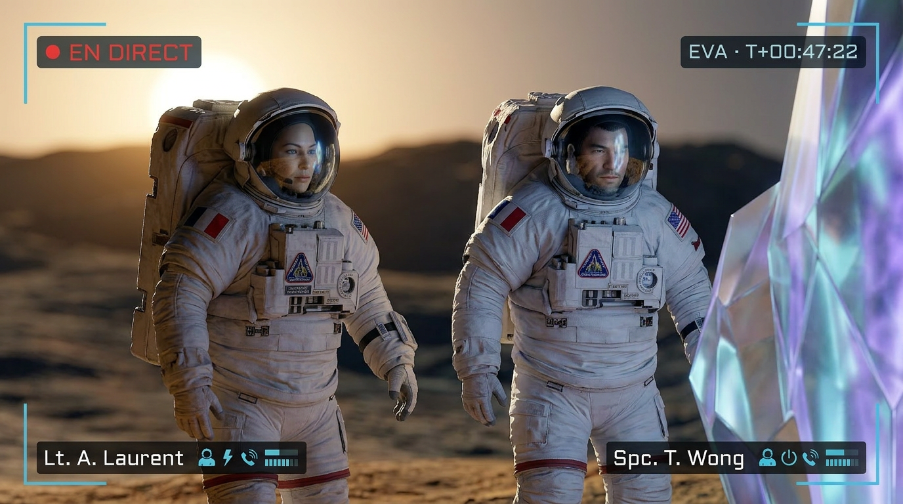

01 // CHRONOLOGIE DE LA DÉCOUVERTE
Déroulé des événements
Signal électromagnétique détecté
Les capteurs de surface de l'Odyssey IV enregistrent un champ électromagnétique faible mais stable en provenance du Secteur-7. Première anomalie signalée par la Spc. Wong.
Début EVA-01 — Investigation
Le Lt. Laurent et la Spc. Wong entament leur sortie extravéhiculaire avec pour objectif secondaire la localisation de la source du signal.
Contact visuel — Structure localisée
À 340 mètres de la base, les astronautes localisent la source : une structure d'origine inconnue de 3,2 mètres de hauteur, émettant une luminescence cyclique.
Confirmation du phénomène bioluminescent
Les instruments confirment : cycle lumineux de 47 secondes précises, champ électromagnétique actif et mesurable. Activation immédiate du Protocole NOVA par le CCA.
Protocole NOVA — Diffusion contrôlée activée
Le CCA valide la communication officielle. Vocabulaire encadré. Analyses en cours. La cellule VIZ·ION prend en charge la diffusion publique.
02 // DONNÉES SCIENTIFIQUES
Caractéristiques mesurées
Mesure effectuée par le Lt. Laurent à l'aide du télémètre laser embarqué. Structure verticale, asymétrique, base ancrée dans le substrat rocheux.
Émission de lumière strictement périodique. Cycle de 47 secondes mesuré sur 18 itérations consécutives. Aucune déviation enregistrée.
Intensité faible mais constante. Spectre inhabituel, non répertorié dans les bases de données géologiques connues. Corrélé au cycle lumineux.
Structure cristalline translucide à reflets bleutés. Analyse spectroscopique en cours. Aucune correspondance dans le catalogue minéralogique terrestre.

Vue frontale · EVA-01 · 11:52 UTC

Bioluminescence · Cycle actif · 11:53 UTC

Macro structure · Spc. Wong · 12:10 UTC
Spectre électromagnétique · CCA · En cours
03 // QUESTIONS FRÉQUENTES
Ce que vous devez savoir
À ce stade, aucun risque n'a été identifié pour l'équipage de l'Odyssey IV. Le champ électromagnétique mesuré est d'une intensité très faible — inférieure à celle d'un téléphone portable. Les protocoles de sécurité standard restent appliqués. L'équipage se porte bien.
Le Protocole NOVA (Notification d'Observation Vérifiée Anomale) est un cadre de communication activé lorsqu'une découverte scientifique majeure nécessite une diffusion contrôlée et vérifiée. Il garantit que chaque information partagée avec le public est validée scientifiquement avant diffusion.
Nous savons que la structure mesure 3,2 mètres de hauteur, qu'elle est composée d'une matière cristalline translucide dont la composition n'est pas encore identifiée, qu'elle émet de la lumière selon un cycle de 47 secondes, et qu'elle génère un champ électromagnétique mesurable. Son origine est à ce jour inconnue et fait l'objet d'analyses approfondies.
Pour l'instant, une seule structure a été localisée. Une exploration complémentaire du Secteur-7 et des zones adjacentes est planifiée. Les résultats seront communiqués dès validation par le Centre de Contrôle Aurora.
Les analyses scientifiques sont en cours à bord de l'Odyssey IV. Un premier rapport complet est attendu dans les 48 heures. La cellule VIZ·ION s'engage à publier chaque mise à jour validée dans la section dédiée ci-dessous, en temps réel.
04 // MISES À JOUR
Suivi en temps réel
Activation du Protocole NOVA
Première communication officielle validée par le CCA. Structure localisée, données préliminaires confirmées. Analyses en cours.
Résultats analyse spectroscopique
Composition chimique de la structure. Premiers éléments communiqués par Dr. Patel.
Visuels haute résolution
Images transmises depuis l'Odyssey IV — structure complète et détails cristallins.
Rapport scientifique complet
Synthèse de l'ensemble des données collectées. Conclusions préliminaires de l'équipe scientifique.